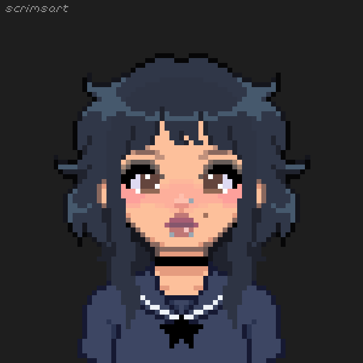
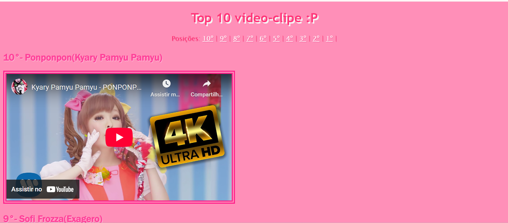
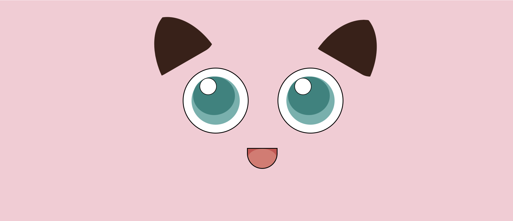
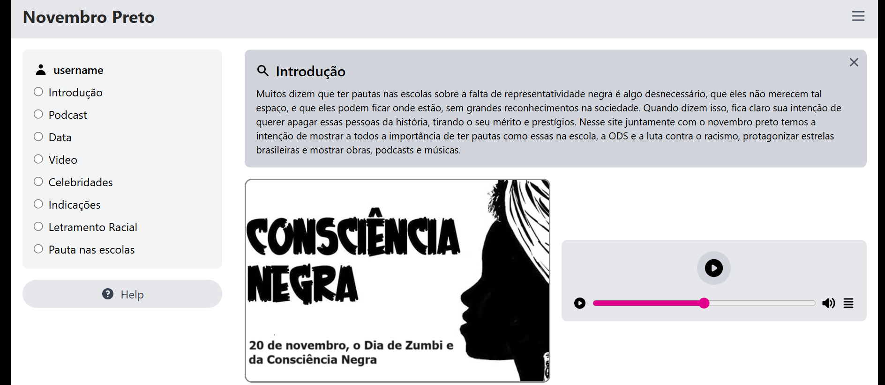

Estudante de Análise e Desenvolvimento de Sistemas na Faculdade Senai Gaspar Ricardo Júnior, e estágiaria na 2RPnet na equipe de dados.
Ver Projetos
Sou uma pessoa que gosta de escutar músicas. Meu estilo musical favorito é o alternativo, porém gosto também de indie, emo, gótico, rock, mpb, pop, metal, entre outros. Sendo a minha cantora favorita a Mitski.
Amo assistir filmes e animes, meu gênero de filmes favorito é o terror, sendo a minha franquia favorita Jogos Mortais. Já os meus animes favoritos são: Death Note, Eraser, Naruto, Dandadan, Ranma 1/2, entre outros.
Gosto de jogos online, no PC e no Celular, como TFT e Brawl Stars, porém também gosto de jogar jogos como stardew valley, the sims, entre outros.
Eu amo me fantasiar e fazer maquiagens diferentes, como maquiagem de palhaço, zumbi, vampiro, fantasia de misa, plus, boneca, monster high, sioux and the banshees, rainha preta.
Começei a me interessar na área de TI quando comecei o técnico no Senai em Desenvolvimento de Sistemas, e depois disso decidi continuar, aprimorando minhas habilidades e conhecimentos, com ajuda dos docentes e toda a proposta do

Projeto de um site de Top 10 músicas, usando HTML e CSS com vídeos incorporados no primeiro semestre do curso técnico.

Projeto de um site de pokemons, usando HTML e CSS, usando os elementos para fazer o rosto dos pokemons, feito no segundo semestre do curso técnico.

Projeto de um site de conscientização sobre o Novembro Preto, usando HTML e CSS, feito no segundo semestre do curso técnico.